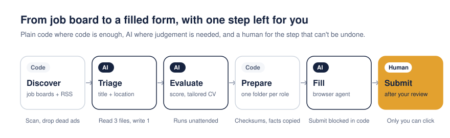
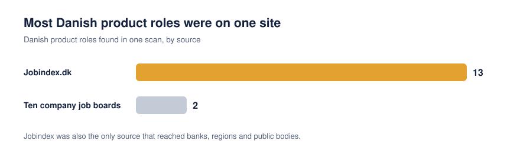
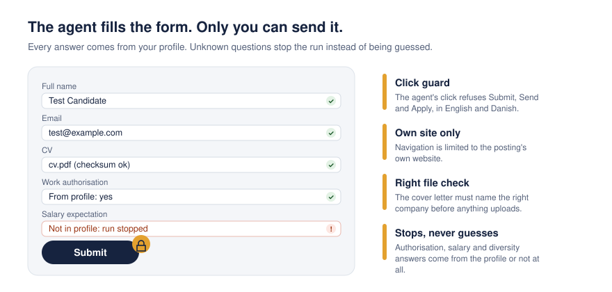
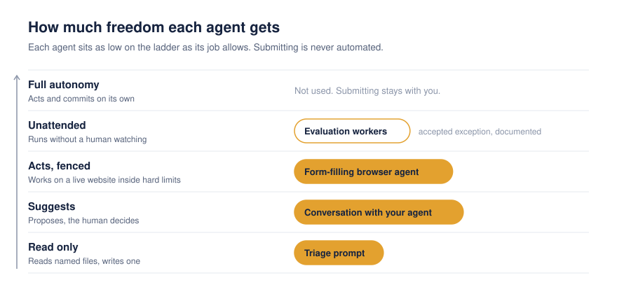

An agentic job-search pipeline
AI agents that find, score and prepare job applications, designed around one rule: the step that cannot be undone stays with a human.
career-ops-dk extends career-ops, an open-source AI job-search system, for the Danish market. It finds roles on Jobindex.dk that the standard setup never sees, triages and scores them, prepares a tailored application for each good fit, and has a browser agent fill the application form. Then it stops. The candidate reads the form and clicks Submit.
I own the repository and its product direction. I wrote the product case study, the decision log, the success metrics and the roadmap, designed how the AI agents are described and governed, and made the system run on macOS. The first version of the scanner and form filler was built by Talha (talha-zshan on GitHub), and the git history shows who wrote which code.

Context and responsibility
I use the pipeline for my own job search in Denmark, so I am also its first user. That made the stakes concrete: every application it touches goes to a real employer with my name on it.
The question behind the product is one I also teach in my Autonomy Ladder workshop: how much freedom should an AI agent get? Here the answer had to be specific, stage by stage, because a mistake in an application cannot be recalled.
Problem and evidence
Two gaps made an AI-run job search in Denmark worse than it needed to be.
- Discovery missed most Danish roles. In one scan, the ten configured company boards returned 2 Danish product roles. Jobindex.dk returned 13, including the enterprise and public-sector tier (banks, regions, KOMBIT) that no company board reached.
- Applying was slow, and the fast options were unsafe. Every application means retyping the same details. Auto-apply tools fix that by submitting for you and guessing what they do not know, including work authorisation and salary. One popular open-source example tells the agent to make its best guess, even on legal declarations.

The worst failure is not a slow application but a wrong one: a cover letter written for one employer arriving in another employer's form. It is visible, cannot be taken back, and reads as careless.
Options and decision
| Option | What it optimised for | Decision |
|---|---|---|
| Auto-apply: the agent fills and submits | The most applications for the least effort | Rejected. Applications cannot be recalled, and browser agents are not reliable over long sequences of steps. |
| Keep filling forms by hand | Full control, no new risk | Rejected. It keeps the slowest, least valuable part of the search. |
| The agent fills, a human submits Chosen | Removing the typing, not the judgement | Chosen. The submit action is blocked in code, and the form is left open in a browser tab for review. |
A rule in a prompt can be ignored by a model. An action the agent does not have cannot be used. So the click action is replaced by a guarded one that refuses submit, send and apply buttons in English and Danish, and navigation is limited to the posting's own website.

What we deliberately did not build
- Automatic submission, even as an option.
- Guessed answers. Work authorisation, sponsorship, salary and diversity questions are answered from the profile or not at all.
- A fork of career-ops. The Danish additions install on top, so upstream updates keep working.
Agentic AI design
The pipeline uses AI at four points, and each one gets only as much freedom as its mistakes can afford.

| Stage | Freedom | Guardrails |
|---|---|---|
| Conversation with the agent CLI | Works with the candidate, turn by turn | Loads the detailed rules only when a question needs them |
| Triage | Read three files, write one | Cannot open links or start other agents; unknown facts go to "maybe" with the reason |
| Evaluation | Runs unattended | The one accepted exception: the upstream runner skips permission checks. Documented, and narrowing it is on the roadmap |
| Form filling | Acts on a live website | No JavaScript or file actions except uploading the CV; submit blocked; own site only; stops on unknown questions and captchas |
Job postings are written by third parties and can contain text that looks like instructions. Every prompt treats them as untrusted data, and nothing in a posting can widen what an agent may read or write.
Trade-offs
- A human reviews every form: slower than auto-apply, but nothing is sent that the candidate has not read.
- Unknown questions stop the run: more runs end early until the profile is complete, but nothing is invented.
- The score bar is typed each run: one more argument, but widening the net is always a conscious choice.
- Cheap triage from title and location only: a good role with an unusual title can be skipped, but most off-target roles cost almost nothing to rule out.
- No personal data in the repository: the project can be shared, but there is no offsite backup of the search by default.
Execution
The pipeline runs in one command: scan, check the posting is still live, triage, evaluate, update the tracker and check its integrity. For each role above the score bar, it exports a self-contained folder with the tailored CV, cover letter, facts and a checksum for every file. The form filler reads only that folder.
Before anything is uploaded, the filler checks that the cover letter names the right company. A checksum proves a file is intact; only this proves it is the right file. A free dry run checks checksums, cover letters and whether the posting is still live before any browser opens or any money is spent.
Result and limits
Measured before building. A read-only test against a real posting set the cost per form at about $0.26, before the queue and runner were built.
A shortcut that failed silently. Installing the additions as symlinks made the scan quietly lose its Jobindex source and the pipeline report 0 pending roles. It was reverted to plain copies the same day, because missing jobs without knowing it is worse than a crash.
The limits are clear too. The submit guard matches button text, so an oddly labelled button could get through; the human review is the real guarantee, and blocking the submit request at network level is next. Lever and Workday forms often end as stops rather than fills.
How success is measured: interviews per application submitted, not applications per week. The guardrails that must stay at zero are submissions without a human click, guessed answers, files sent to the wrong employer and duplicate applications.
Learning
The useful question about an AI agent is not whether it can do a task but what happens when it gets it wrong. Answering that stage by stage decided almost everything here: where to use a model, where plain code is better, and which single step must stay human.
Evidence note
The 13 vs 2 roles comparison comes from one scan, and the cost per application from the initial test runs. Outcome data (interviews per application) is not yet tracked; it is on the roadmap. The full reasoning is in the decision log.